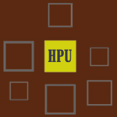

Preface.
This project belongs to the 'Knowledge Representation and Extraction' course of University of Bologna, a.y. 2018/2019.The project is aimed at extracting knowledge of lyrics of 35k rap song dating from 1980 - 2015 with the final goal to covert extracted data in a linked open data environment as the RDF graph.
Introduction.
The idea behind the project is inspired by the fact that rap is not just about music. Rap is an intensely intertextual and self-referential form. One of the reason for that is the extremely competitive expressive form of rap music. For that reason, emcees exhibit their rhyming abilities against the competition. Hip Hop is a unique era of culture where art, music, history, politics, fashion, trends and language became deeply pitted with metaphors that became consistent, ubiquitous and global. Hence, hip hop music is a milestone of information about culture at different time points.
Workflow
The methodology of the project.
-
Getting the knowledge about the topic
SPARQL Queries
The information related to Hip Hop and Rap was queried by using the SPARQL language. The data was extracted from DBpedia by using Virtuoso SPARQL Query Editor and Wikidata.LEARN MORE
-

Getting the raw data
Running Python Code
As a rsearchable database the lyrics for the top 100 rappers was obtained as well as the dataset of songs from MetroLyrics. By running the python code, the data was cleaned and processes.LEARN MORE
-
Sentiment Analysis
VADER
In order to obrain a sentiment score, VADER (Valence Aware Dictionary and sEntiment Reasoner) a lexicon and rule-based sentiment analysis tool was usedLEARN MORE
-
The Lyrics Mining Process
Literary devices
In order to implement lyrics mining on the database, sizeable samples of names of interest was used, as well as a script to search for the names within the lyrics database. The final part of this step includes the detection and interpretation of the use of literary devices in lyrics.LEARN MORE
-
Creating RAP Ontology
The RAP Ontology is intended to promote a shared understanding of rap lyrics as the source of cultural heritage information by providing a framework that any rap song can be mapped to.LEARN MORE
-
Map
rap
lyric!
Queries
In this section, the information related to Hip Hop and Rap is queried by using the SPARQL language. The data is extracted from DBpedia by using Virtuoso SPARQL Query Editor and Wikidata.
| NL Question | SPARQL Query | Answer |
|---|---|---|
| What is Hip Hop? | PREFIX : <http://dbpedia.org/resource/> PREFIX rdfs: <http://www.w3.org/2000/01/rdf-schema#> SELECT ?s WHERE { ?s rdfs:label "Hip Hop"@en } |
Query Result |
| What is Rapping? | PREFIX : <http://dbpedia.org/resource/> PREFIX rdfs: <http://www.w3.org/2000/01/rdf-schema#> SELECT ?s WHERE { ?s rdfs:label "Rapping"@en } |
Query Result |
| What are genres of Hip Hop | select distinct ?y WHERE { ?y dct:subject dbc:Hip_hop_genres } |
Query Result |
| What are Rap Bands and their associated members? | PREFIX dbo: <http://dbpedia.org/ontology/> PREFIX dbr: <http://dbpedia.org/resource/> PREFIX dbp: <http://dbpedia.org/property/> PREFIX foaf: <http://xmlns.com/foaf/0.1/> PREFIX rdfs: <http://www.w3.org/2000/01/rdf-schema#> SELECT ?members ?bandName where { ?band dbo:genre dbr:Rap . ?band dbp:currentMembers ?members. ?band foaf:name ?bandName FILTER(langMatches(lang(?bandName), "en")) } |
Query Result |
| What are Hip Hop Bands and their associated members? |
PREFIX dbo: <http://dbpedia.org/ontology/> PREFIX dbr: <http://dbpedia.org/resource/> PREFIX dbp: <http://dbpedia.org/property/> PREFIX foaf: <http://xmlns.com/foaf/0.1/> PREFIX rdfs: <http://www.w3.org/2000/01/rdf-schema#> SELECT ?members ?bandName where { ?band dbo:genre dbr:Rap . ?band dbp:currentMembers ?members. ?band foaf:name ?bandName FILTER(langMatches(lang(?bandName), "en")) } |
Query Result |
| What are derivatives genres of Hip Hop? |
select distinct ?y WHERE { ?y a dbo:Genre . ?y dbo:derivative dbr:Hip_hop_music |
Query Result |
Acquiring Data.
As a raw data, the lyrics for the top 100 rappers were used as well as the the dataset of songs from MetroLyrics.
To retrieve the lyrics for the top 100 rappers , I used Cypher, a python library released recently to retrieve music lyrics (to install: pip install thecypher). The list of top rappers was obtained from ranker.com that source the data from an API. This was done by running the following code:
import requests
url = 'https://cache-api.ranker.com/lists/855723/items'\
'?limit=100&offset=0&include=votes,wikiText,rankings,'\
'openListItemContributors&propertyFetchType=ALL&liCacheKey=null'
r = requests.get(url)
data = r.json()
artists = [i['name'] for i in data['listItems']]
print(artists)
I looped over the output list and run thecypher.get_lyrics on each artist. The following code `get_lyrics` the lyrics and convert it to a `DataFrame`.
import thecypher
import pandas as pd
lyrics = []
for artist in artists:
# our Cypher code
artist_lyrics = thecypher.get_lyrics(artist)
# append each record
[lyrics.append(i) for i in artist_lyrics]
# convert to a DataFrame
lyrics_df = pd.DataFrame(lyrics)
lyrics_df.head()
By default, the data is delivered with one lyric per row. The following code will convert it to one song per row:
= ['song', 'year', 'album', 'genre', 'artist']
lyrics_by_song = lyrics_df.sort_values()\
.groupby().lyric\
.apply(' '.join)\
.reset_index(name='lyric')
lyrics_by_song.head(1)
Ontology Creation and Visualisation
An ontology is a detailed model of a slice of reality which is based on the facts that we know about that reality. This model is a description of some of the things and some of the relationships between the things that are known about that reality.
The RAP Ontology is intended to promote a shared understanding of rap lyrics as the source of cultural heritage information and to reuse the knowledge by providing a framework that any rap song can be mapped to. In this way, it helps to mediate between different sources of information on the Semantic Web.
While creating the ontology, the results of the lyrics mining was taken into account. Hence, 11 classes (superclass owl:Thing) were created: Album, Car, Genre, Literary Device, Person, Place, Release_Date, Sentiment, Topic. Considering the results of VADER Sentiment Analysis the following subclasses to class Sentiment were added:(subclasses: Compound, Negative, Neutral, Positive). The literary devices manual analysis resulted in the creation of 15 subclasses to the class Literary device:zeugma, tmesis, synesthesia, synecdoche, spoonerism, simile, portmanteau, polysyndeton, pleonasm, pangrammatic, palindrom, metonymy, litotes, irony, imagery.
Documentation and Visualisation
Click here to view the RAP Ontology documentation that was generated with Widoco and the visualisation with WebVOWL.
The XML/OWL code of RAP ontology is available here.
The RDF visualisation as a graph is available here , file name GRAPH.png
The RDF visualisation as class hierarchy is availablehere, file name classhi.png

Lisa Siurina
University of Bologna.
Digital Humanities and Digital Knowledge.